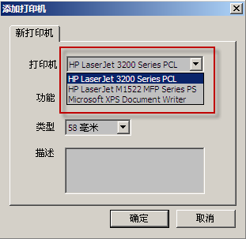

- 工具栏 包含了e点通®打印服务的常用功能：
 - 启动打印服务
- 启动打印服务 - 停止打印服务
- 停止打印服务 - 网络设置
- 网络设置- - 打印机设置
- 信息提示栏 记录了e点通®打印服务的操作信息。
- 打印信息栏 显示的是当前您的打印机配置信息。
| ID | 版本号 | 作者 | 修改 |
| 1 | v0.9.3 | Ying.Zhang | 帮助文档的第一版 |
| 在开始菜单中运行e点通®打印服务，显示打印服务的主界面，如下图所示： |
目录 |
| 选择工具栏中的，或者“操作”菜单中选择“启动”，开启e点通®的打印服务，如下图所示： |
 |
| 如果您的网络配置没有问题，信息提示栏 会给出登录成功的信息，如下图所示： |
 |
目录 |
| 选择工具栏中的，或者在“操作”菜单中选择“停止”，从而停止e点通®的打印服务，如下图所示：
|
 |
| 停止e点通®打印服务成功后，信息提示栏显示打印服务停止，如下图所示： |
目录 |
| 选择工具栏中的，或者在“设置”菜单中选择“网络”，如下图所示： |

|
| 在“网络设置”中，输入服务器IP，端口和您的e点通帐号与密码，选择“确认”。程序提示网络设置已修改，选择“是”重新启动e点通® 打印服务，如下图所示： |

 |
| 小提示：服务器IP和端口用来连接e点通®的数据中心，帐号和密码则是在您的e点通帐号和密码，只有e点通的会员才能通过验证，享受打印的服务哦 |
2.5.1 打印机列表 |
||
| 选择工具栏中的，或者选择“设置”菜单下的“打印机”，如下图所示： | ||
 |
||
| 显示打印机列表，如下图所示： | ||
 |
||
目录 | ||
2.5.2 删除打印机 |
||
| 在打印机列表中，选择您想删除的打印机条目，点击鼠标右键，在弹出的快捷菜单中选择“删除打印机”，如下图所示： | ||
 |
||
目录 | ||
2.5.3 添加打印机 |
||
| 在打印机列表中的任意位置，点击鼠标右键，在弹出的快捷菜单中选择“添加打印机”，显示添加打印机的界面，如下图所示： | ||
  |
||
| 在添加打印机的界面中， 第一步、在“打印机”的下拉列表框中选择一台打印机，如下图所示： |
||
|  | ||
第二步、选择打印机的功能，如下图所示： |
||
 |
||
e点通®打印服务提供了3种打印机功能让您选择：
|
||
| 当您选择“下单（详细）”的功能时，还需要选择相应的厨房，如下图所示： | ||
 |
||
| 打印机的这3种功能如下表所示： |
| 功能 | 打印时机 | 描述 |
| 下单 | 下单 | 打印下单时的账单，如账单1所示 |
| 下单（详细） | 下单 | 按厨房分别打印每个菜品的账单，如账单2所示 |
| 结帐 | 结帐 | 打印结帐的账单，如账单3所示 |


| 通过打开e点通®打印服务自动启动的设置，每次电脑开机的时候，都会自动的运行e点通的打印服务，省去每次开机都要运行的麻烦。 设置自动启动非常简单，把“设置”菜单下的“开机启动”选项打开，如下图所示： |
 |
如果您要取消开机启动，把“设置”菜单下的“开机启动”选项关闭就可以了，如下图所示： |
e点通®打印服务的在线更新有两种方式：
|
2.7.1 手动更新 |
| 选择“帮助”菜单下的“检查更新”，如下图所示： |
| 如果当前您使用的是e点通®打印服务的最新版本，程序弹出提示框，如下图所示： |
| 如果服务器上有新版本需要更新，e点通®打印服务会自动下载新版本的安装程序，并提示您是否安装，选择“是”，根据安装向导，完成新版本的安装，如下图所示： |
目录 |
2.7.2 自动更新 |
| 自动更新是每次运行e点通®打印服务时，都先进行版本的检测，如果发现服务器有新的版本，打印服务会自动下载和安装， 整个升级过程不需要任何人工参与，完全自动化，非常方便的喔。首先您要先开启自动更新的功能，把“设置”菜单下“自动更新”的选项打开，如下图所示： |
| 如果当前您使用的是e点通®打印服务的最新版本，程序在最开始就会给您相应的提示，如下图所示： |
| 如果服务器上有新版本需要更新，e点通®打印服务会自动下载、安装，并重新运行新版本，如下图所示： |
| 小提示：建议您把“开机启动”和“自动更新”这两个功能都打开，这样您只要打开电脑，e点通®打印服务就可以自动运行并进行版本检测，所有步骤都是自动完成，非常省心的喔:-) |
目录 |
| 选择“帮助”菜单下的“在线帮助”，e点通®打印服务会在浏览器中自动打开在线帮助文档，如下图所示： |